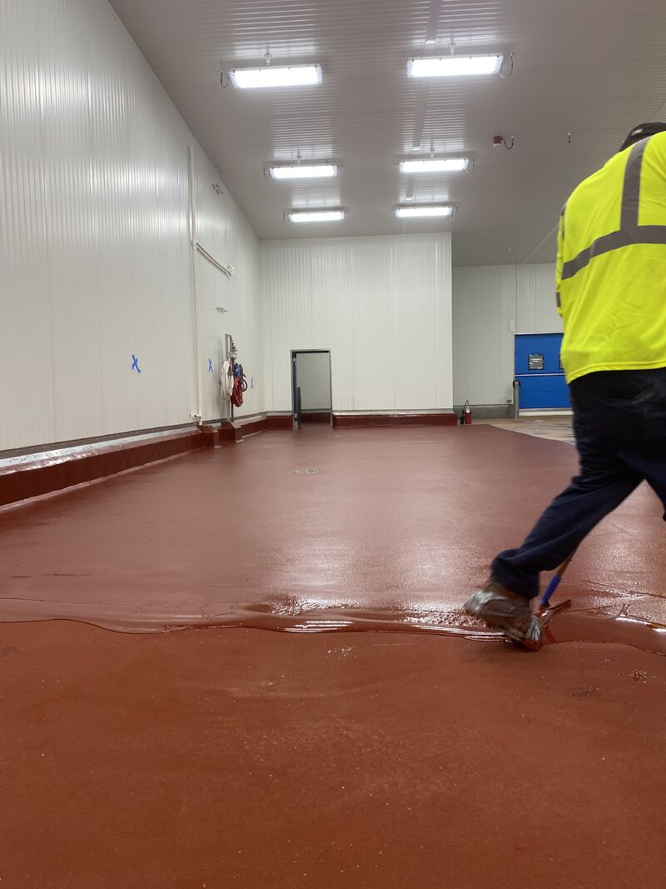

Every food processor faces the same tension: you need floors with enough texture to keep workers safe in wet conditions, but those same floors need to be cleaned and sanitized daily. More texture means better traction. But more texture also means more places for bacteria to hide and harder surfaces to clean. So how do you get both?
The Trade-Off
Higher texture profiles provide excellent traction in wet processing areas — critical for preventing slips and falls where water, fats, and proteins are constantly on the floor. But aggressive textures create micro-valleys that complicate cleaning and can harbor bacteria if not properly designed.
On the other hand, smoother surfaces are a dream to sanitize. A squeegee and foam cleaner, and you're done. But put water, grease, or blood on a smooth floor and you've got a slip hazard that no amount of signage will fix.
Different Zones, Different Textures
The answer isn't one-size-fits-all. Different areas of your facility have different demands:
- Heavy washdown areas (kill floors, processing lines) — These need aggressive texture. Workers are dealing with water, fats, and offal constantly. Maximum slip resistance is non-negotiable.
- Packaging and dry processing — Moderate texture works here. Occasional spills, but not the constant wet conditions of a kill floor.
- Hallways and cold storage — Smoother profiles are appropriate. These areas see less liquid but still need to meet OSHA requirements for slip resistance.
- Chemical storage — Smooth, chemical-resistant surfaces that shed spills quickly and clean easily.
How We Dial It In
At SaniCrete, we don't just install the same floor everywhere. We evaluate your specific operational needs — traffic patterns, cleaning protocols, what's being processed, and what's hitting the floor — and customize the aggregate finish for each zone.
That means selecting the right aggregate size and broadcast rate to hit the sweet spot between traction and cleanability. Our cementitious urethane systems — SaniCrete STX, SaniCrete SL, and SaniCrete HF — all accept custom aggregate finishes, giving us the flexibility to match the floor to the environment.
The Result
A seamless, USDA-compliant floor that's safe to walk on when wet and easy to clean at the end of every shift. No cracks or seams for bacteria to hide in. No compromise between worker safety and food safety. That's what a properly specified floor looks like.